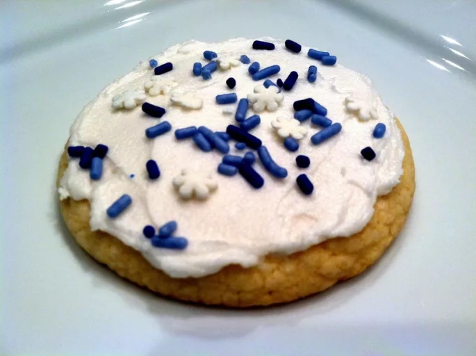

Cookie
Home

This sugar cookie frosting is made with confectioners' sugar and shortening instead of butter so it's less likely to melt. It has a lovely vanilla flavor. It's quick and easy to make and works well on both soft and crisp sugar cookies. It starts out soft and spreadable but firms up nicely for cookie stacking and storage.
Ingridients
- ⅔ cup warm water
- ⅔ cup warm milk
- 2 teaspoons active dry yeast
- 2 tablespoons white sugar
- 1 large egg, beaten
- 6 tablespoons unsalted butter, melted
- 4 cups all-purpose flour, or more as needed
- 1 ½ teaspoons fine salt
Steps
- Combine warm water and milk in a mixing bowl and sprinkle yeast over.
- Add sugar, egg, and melted butter for dough to the yeast mixture.
- While dough is rising, preheat the oven to 375 degrees F (190 degrees C).
- Remove from the oven onto a wire rack and let cool for 5 minutes.